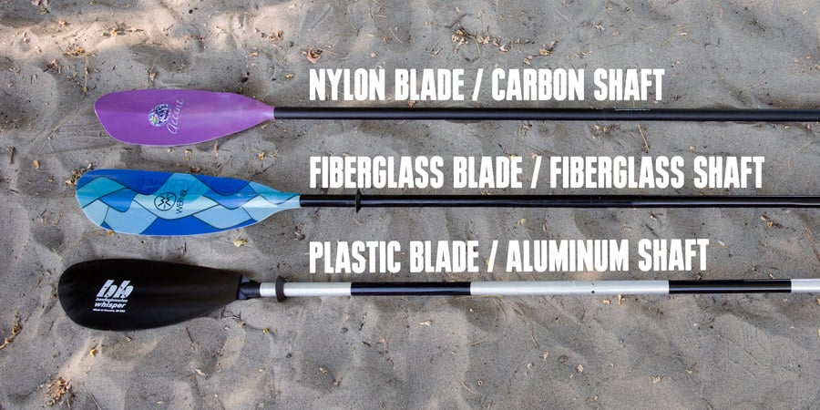

Paddles
Paddle Length
Figuring out the right size (length) of paddle is surprisingly straightforward. The wider your boat is, the longer your paddle needs to be. Your height is also a factor, especially for a narrower boat: Taller paddlers need longer paddles.

Paddle Materials
Plastic/Nylon
The low-price leader, plastic is often chosen by recreational paddlers who think it’s indestructible. It can crack, though, and degrades when left in the sun. Plastic’s flexibility might prevent it from snapping in two, but flexibility in the water sacrifices efficiency on your stroke.
Fiberglass
In the middle of the price range, these offer excellent performance and durability. More lightweight than plastic, a fiberglass blade might chip, but it usually won’t crack all the way through. Rigid fiberglass blades are efficient in the water.
Carbon-Fiber
If you’re willing to pay top dollar for top performance, go with carbon-fiber. Truly ultralight, it’s also ultrastiff for excellent energy transfer with each stroke.